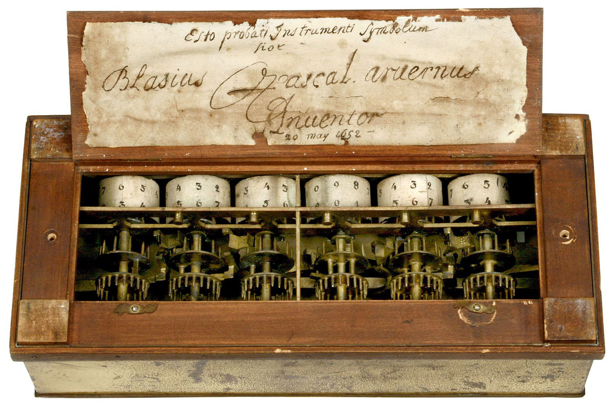

Pascal
Pascal

Pascal is one of two inventors given credit for creating the first mechanical calculator. When he was a teenager he began working on the concept of a calculating machine. His invention was created in 1642. His concept came from working for his father and the arithmetical labor that was heavily involved in supervising taxes. The calculators function was to add and subtract numbers one through nine. The invention was successful because of the carry mechanism that allowed digits to carry over to the next dial. The creation of the Masculine was so influential that many later developments of it were based off of the Pascaline.